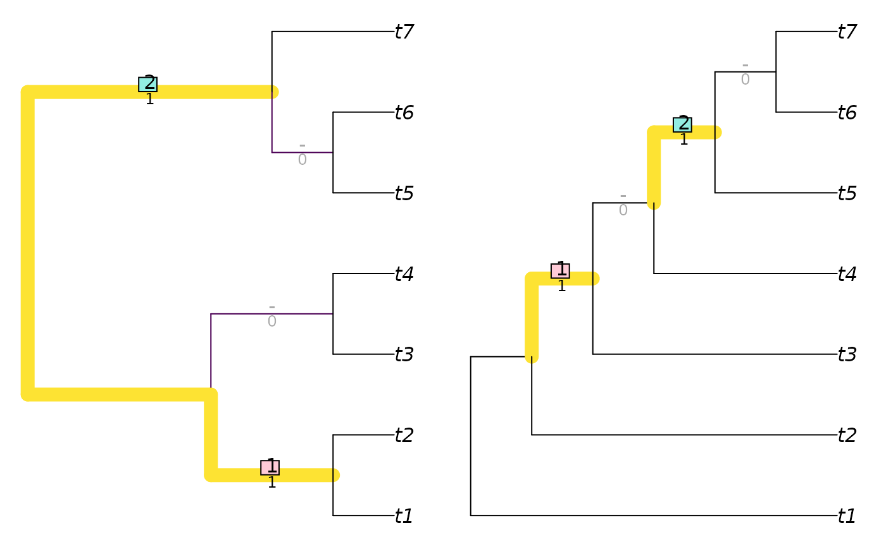
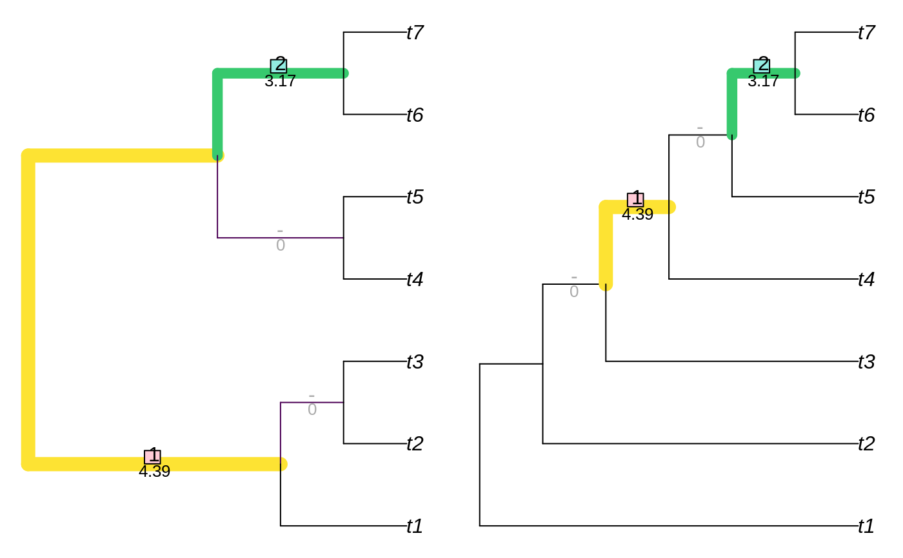

R/tree_distance_rf.R
Robinson-Foulds.RdCalculates the Robinson-Foulds distance, or the equivalent similarity measure, optionally annotating matched splits and weighting splits according to their phylogenetic information content (Steel & Penny 2006).
InfoRobinsonFoulds( tree1, tree2 = tree1, similarity = FALSE, normalize = FALSE, reportMatching = FALSE ) InfoRobinsonFouldsSplits( splits1, splits2, nTip = attr(splits1, "nTip"), reportMatching = FALSE ) RobinsonFoulds( tree1, tree2 = tree1, similarity = FALSE, normalize = FALSE, reportMatching = FALSE ) RobinsonFouldsMatching( tree1, tree2 = tree1, similarity = FALSE, normalize = FALSE, ... ) RobinsonFouldsSplits( splits1, splits2, nTip = attr(splits1, "nTip"), reportMatching = FALSE )
| tree1 | Trees of class |
|---|---|
| tree2 | Trees of class |
| similarity | Logical specifying whether to report the result as a tree similarity, rather than a difference. |
| normalize | If a numeric value is provided, this will be used as a
maximum value against which to rescale results.
If |
| reportMatching | Logical specifying whether to return the clade matchings as an attribute of the score. |
| splits1 | Logical matrices where each row corresponds to a leaf,
either listed in the same order or bearing identical names (in any sequence),
and each column corresponds to a split, such that each leaf is identified as
a member of the ingroup ( |
| splits2 | Logical matrices where each row corresponds to a leaf,
either listed in the same order or bearing identical names (in any sequence),
and each column corresponds to a split, such that each leaf is identified as
a member of the ingroup ( |
| nTip | Integer specifying the number of leaves in each split. |
| ... | Not used. |
An array of numerics providing the distances between each pair of
trees in tree1 and tree2, or splits1 and splits2.
Note that if reportMatching = TRUE, the pairScores attribute returns
a logical matrix specifying whether each pair of splits is identical.
InfoRobinsonFoulds() calculates the tree similarity or distance by summing
the phylogenetic information content of all splits that are (or are not)
identical in both trees. Consequently, splits that are more likely
to be identical by chance alone make a smaller contribution to overall
tree distance, because their similarity is less remarkable.
RobinsonFouldsMatching: Matched splits, intended for use with
VisualizeMatching().
RobinsonFoulds() is normalized against the total number of splits that
are present.
InfoRobinsonFoulds() is normalized against the sum of the phylogenetic
information of all splits in both trees, treated independently.
Robinson DF, Foulds LR (1981). “Comparison of phylogenetic trees.” Mathematical Biosciences, 53(1-2), 131--147. ISSN 00255564, doi: 10.1016/0025-5564(81)90043-2 .
Steel MA, Penny D (2006). “Maximum parsimony and the phylogenetic information in multistate characters.” In Albert VA (ed.), Parsimony, Phylogeny, and Genomics, 163--178. Oxford University Press, Oxford.
VisualizeMatching(), to display paired splits.
Other tree distances:
JaccardRobinsonFoulds(),
KendallColijn(),
MASTSize(),
MatchingSplitDistance(),
NNIDist(),
NyeTreeSimilarity(),
PathDist(),
SPRDist(),
TreeDistance()
library('TreeTools') # For BalancedTree, PectinateTree, as.phylo balanced7 <- BalancedTree(7) pectinate7 <- PectinateTree(7) RobinsonFoulds(balanced7, pectinate7)#> [1] 4RobinsonFoulds(balanced7, pectinate7, normalize = TRUE)#> [1] 0.5InfoRobinsonFoulds(balanced7, pectinate7)#> [1] 13.90209